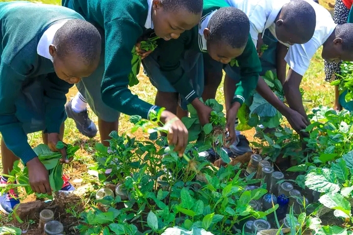

Partnerships
Institutions We Work With
Collaborating with schools, NGOs, county governments, and agri-research institutions to scale climate-smart agriculture across Kenya.


RigenFarms empowers schools and communities with innovative wicking container gardening and climate-smart farming — improving food security, enhancing nutrition, and building resilience across Kenya.
Our work is rooted in climate-smart agriculture and community food security, with practical action across wicking gardening, school farms, nutrition, and environmental education.
Our flagship technique uses self-watering containers that conserve up to 70% more water than conventional gardening — ideal for schools, homes, and water-scarce environments.
Establishing productive gardens in school compounds, integrating agriculture into the curriculum and ensuring students receive fresh, nutritious produce in their daily meals.
Connecting communities with sustainable food production methods that improve household nutrition, reduce market dependence, and strengthen local food systems year-round.
Training farmers in drought-tolerant crops, water-smart techniques, and adaptive farming practices that withstand erratic rainfall and prolonged dry seasons.
Building farmer networks, cooperatives, and peer-learning groups so that knowledge and skills multiply beyond formal training into lasting community practice.
Raising ecological awareness among youth and adults through workshops, school programs, and hands-on demonstrations that foster a stewardship ethic toward land and water.

RigenFarms is a community-driven initiative focused on promoting climate-smart agriculture through innovative techniques like wicking container gardening.
By empowering schools and local communities with sustainable farming practices, RigenFarms improves food security, enhances nutrition, and builds resilience against climate change.
Collaborating with schools, NGOs, county governments, and agri-research institutions to scale climate-smart agriculture across Kenya.
Ask anything about plant growth, wicking gardens, composting, soil health, crop diseases, or climate-smart farming — get instant expert answers.
The pillars that guide every garden we plant, every farmer we train, and every community we serve.
A Kenya where every school and community grows its own food using climate-smart, water-wise techniques — nourished, resilient, and ecologically aware.
To empower schools and communities with innovative wicking container gardening and sustainable farming methods that improve food security and build climate resilience.
Measurable change: more nutritious school meals, household gardens producing year-round, water-smart farms thriving through droughts, and a generation of eco-literate youth.
Milestones and notable contributions to food security and climate-smart agriculture across Kenya.
Institutional recognition received for innovations in climate-smart agriculture and community food security.
500+ wicking container gardens installed in schools and homesteads across 6 counties.
Measurable improvements in school meal nutrition, household diet diversity, and child health indicators.
2,000+ farmers trained in sustainable, water-wise agriculture practices with documented skill transfer.
Access guides, training materials, and program documentation — or sign up to bring RigenFarms to your school or community.
Annual reports and impact summaries documenting RigenFarms' reach, outcomes, and lessons from the field.
Open ReportsStep-by-step wicking container setup guides, crop calendars, compost recipes, and water management checklists.
Browse Guides